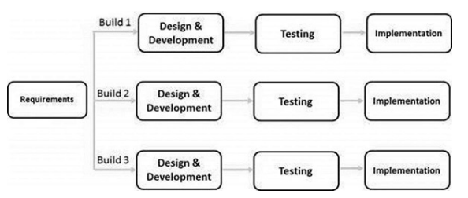

In the Iterative model, iterative process starts with a simple implementation of a small set of the software requirements and iteratively enhances the evolving versions until the complete system is implemented and ready to be deployed.
An iterative life cycle model does not attempt to start with a full specification of requirements. Instead, development begins by specifying and implementing just part of the software, which is then reviewed to identify further requirements. This process is then repeated, producing a new version of the software at the end of each iteration of the model.
Iterative Model - Design
Iterative process starts with a simple implementation of a subset of the software requirements and iteratively enhances the evolving versions until the full system is implemented. At each iteration, design modifications are made and new functional capabilities are added. The basic idea behind this method is to develop a system through repeated cycles (iterative) and in smaller portions at a time (incremental).
The following illustration is a representation of the Iterative and Incremental model:
Iterative and Incremental development is a combination of both iterative design or iterative method and incremental build model for development. "During software development, more than one iteration of the software development cycle may be in progress at the same time." This process may be described as an "evolutionary acquisition" or "incremental build" approach."
In this incremental model, the whole requirement is divided into various builds. During each iteration, the development module goes through the requirements, design, implementation and testing phases. Each subsequent release of the module adds function to the previous release. The process continues till the complete system is ready as per the requirement.
The key to a successful use of an iterative software development lifecycle is rigorous validation of requirements, and verification & testing of each version of the software against those requirements within each cycle of the model. As the software evolves through successive cycles, tests must be repeated and extended to verify each version of the software.
Iterative Model - Application
Like other SDLC models, Iterative and incremental development has some specific applications in the software industry. This model is most often used in the following scenarios:
- Requirements of the complete system are clearly defined and understood.
- Major requirements must be defined; however, some functionalities or requested enhancements may evolve with time.
- There is a time to the market constraint.
- A new technology is being used and is being learnt by the development team while working on the project.
- Resources with needed skill sets are not available and are planned to be used on contract basis for specific iterations.
- There are some high-risk features and goals which may change in the future.
Iterative Model - Pros and Cons
The advantage of this model is that there is a working model of the system at a very early stage of development, which makes it easier to find functional or design flaws. Finding issues at an early stage of development enables to take corrective measures in a limited budget.
The disadvantage with this SDLC model is that it is applicable only to large and bulky software development projects. This is because it is hard to break a small software system into further small serviceable increments/modules.
The advantages of the Iterative and Incremental SDLC Model are as follows:
- Some working functionality can be developed quickly and early in the life cycle.
- Results are obtained early and periodically.
- Parallel development can be planned.
- Progress can be measured.
- Less costly to change the scope/requirements.
- Testing and debugging during smaller iteration is easy.
- Risks are identified and resolved during iteration; and each iteration is an easily managed milestone.
- Easier to manage risk - High risk part is done first.
- With every increment, operational product is delivered.
- Issues, challenges and risks identified from each increment can be utilized/applied to the next increment.
- Risk analysis is better.
- It supports changing requirements.
- Initial Operating time is less.
- Better suited for large and mission-critical projects.
- During the life cycle, software is produced early which facilitates customer evaluation and feedback.
The disadvantages of the Iterative and Incremental SDLC Model are as follows:
- More resources may be required.
- Although cost of change is lesser, but it is not very suitable for changing requirements.
- More management attention is required.
- System architecture or design issues may arise because not all requirements are gathered in the beginning of the entire life cycle.
- Defining increments may require definition of the complete system.
- Not suitable for smaller projects.
- Management complexity is more.
- End of project may not be known which is a risk.
- Highly skilled resources are required for risk analysis.
- Projects progress is highly dependent upon the risk analysis phase.